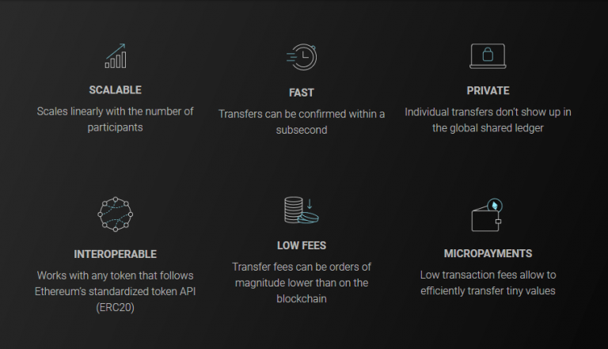
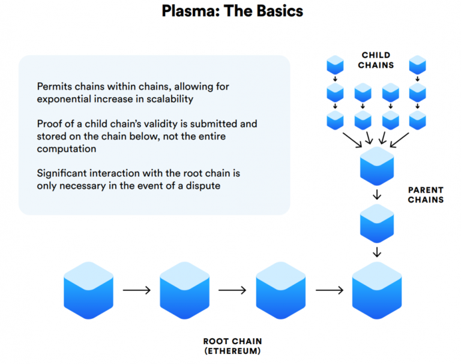
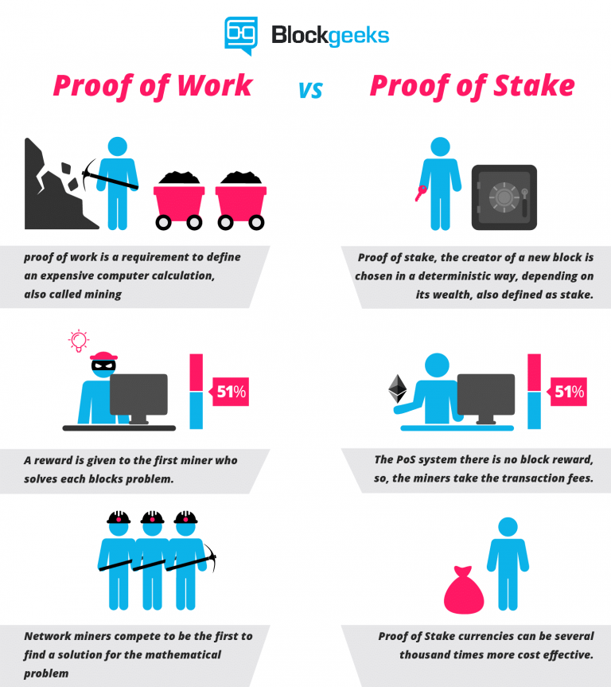

Класифицирането на различните версии на Ethereum може да бъде трудно. Това е така, защото проектът не е същият като този по време на основния му старт през юли 2015 г. Освен това, съществуват две общоприети класификации.
Първо ще откриете, че блокчейнът Ethereum в началото на 2019 г. все още се нарича „Ethereum 1.0“. Ethereum 2.0 се нарича Serenity. Официалната страница на Wiki на Ethereum показва, че Serenity е технически класифициран като Ethereum v4 и неговата дата на излизане трябва да бъде определена.
Някои от основните етапи на развитие на Ethereum 1.0 включват:
Въпреки че това се случи технически през 2018 г., все още е важно и скорошно постижение на пътната карта за постигане на по-голяма скалируемост за Ethereum. В обобщение, протоколът Red Eyes позволява по-бързо завършване на транзакциите чрез технологията на платежния канал, която се осъществява извън веригата.
Някои иновативни характеристики на Red Eyes включват единични и мулти-хоп трансфери, REST API с крайни точки за всички функционалности, пренаписани и по-ефективни интелигентни договори с газ (напр. Само един договор за маркерна мрежа), възстановимост в случай на нередовно изключване на Raiden възел, както и интегрирането на транспортния протокол Matrix за съобщения.
Все пак, сегашната версия на Red Eyes има няколко известни проблема, за които трябва да знаете. Например, трети страни понастоящем не са в състояние да следят каналите от името на възли или услуги за намиране на път. Също така не е възможно да се извършват атомни размени или да се надграждат интелигентните договори с Red Eyes.
Единственият начин да обновите мрежата е да затворите всички канали и да преразпределите нов интелигентен договор и да отворите отново каналите. Освен това в блога на Raiden се споменават многобройни бележки за сигурността. Някои известни проблеми включват компрометирана потребителска система, пълен диск, претоварване на блокове и реорганизации на веригите.
След като е напълно разгърнат, Raiden е създаден, за да даде възможност на блокчейн Ethereum да обработи един милион транзакции в секунда и да направи транзакциите значително по-евтини от преди.
През декември 2018 г. Виталик Бутерин изпрати 1000 ETH субсидии за три различни блокер компании: Prysmatic Labs, Sigma Prime и ChainSafe Systems. Въпреки че това беше положителна новина, тя всъщност доведе до смесени реакции от страна на членовете на общността на блокчейн.
Например, един инвеститор на VC заяви, че Ethereum е „липсващите дати на кораби [и] нямат основно ръководство за работа“. Главен изпълнителен директор на крипто проекта каза: „Ethereum е поела преднина за твърде дълго (2 години). Нуждае се от по-голям акцент и неотложна необходимост от скалируемост, за да се възстанови неговата история. Движете се бързо или бавно.
Независимо дали сте съгласни с тези критики или не, е безопасно да се каже, че повечето от иновациите на Ethereum все още са включени в бъдещата пътна карта и е необходима много работа, за да запази позицията си на лидер в блокейн и крипто. Като се има предвид това, ето някои бъдещи събития с нетърпение.
Въпреки че е в процес на разискване, повечето смятат, че плазмата е решение за скалиране по веригата. Това се дължи на факта, че Плазмата разчита на присъщата сигурност на блокчейна Ethereum.
Плазмените вериги имат способността да бъдат по-добри от обикновените странични вериги, поради повишената сигурност и по-лесна достъпност. Например, ако Plasma sidechain се счупи, средствата все още са сигурни благодарение на основната верига. В същото време, потребителите могат да теглят средства от страничната верига на плазмата към главната верига по всяко време с баланси от последния валиден блок.
През септември 2018 г. директорът на инженерния отдел на OmiseGo Kasima Tharnpipitchai очерта актуализациите за предоставянето на решение за плазмата на Ethereum на среща в Варшава. На 8 октомври 2018 г. екипът на OmiseGo пусна петата Плазмена актуализация. Въпреки че Плазма не е добавена в началото на основната мрежа на Ethereum, напредъкът към тази цел е голям. Например, екипът на Plasma пристигна в Devcon4 с вътрешен testnet, Plasma MVP и първия dapp, построен върху OmiseGO.
Плазмените пари са друго решение, което трябва да е дори по-ефективно от Плазмата. Все пак, това е все още в изследователската фаза от началото на 2019 г. Екипът на OMG работи с други изследователи за опростяване на атомния суап протокол, който използва атомните размени и дефрагментирането на Виталик Бутерин.
Loom Network е друг проект на blockchain, който работи върху разработването на подобни решения за плазмата, за да се подобри скалируемостта на блокчейна Ethereum.
Каспер е чистият консенсусен алгоритъм за доказване на Stake. Защо промяната в Каспер? Казано по-просто, доказателството за блокиране на дяловете обикновено е по-мащабируемо от блокчеините „Доказателство за работа“. Освен това, нарастват опасенията за въздействието върху околната среда на минните операции на криптовалутите.
От началото на 2019 г. транзакциите на блокчейна Ethereum все още зависят от Доказателство за работа. Това означава, че миньорите в криптовалурата играят голяма роля при проверката на точността на транзакциите. Когато Ethereum превключи на Casper, транзакциите ще бъдат валидирани със залагане.
Първоначално, основният екип за развитие реши да излезе с две фази на Каспер (FFG и CBC). FFG трябваше да бъде хибридно PoW / PoS решение. Междувременно, Каспер ТГС е проектиран да бъде чист PoS. През 2018 г. обаче екипът на Ethereum премахна този двуфазен подход на Каспер и реши да се съсредоточи единствено върху трансграничното сътрудничество на Casper. Ето една отлична статия (с диаграми), която демонстрира как трябва да работи Каспер ТГС.
В основата си, sharding има за цел да осигури сигурно разделяне на съществуващата блокчейна на по-малки парчета, известни като парчета. Това решение, както и повечето други в този списък, е нещо, върху което работят и разработчиците и изследователите, които не работят с Ethereum.
Когато става въпрос за прилагане на sharding на mainnet, Ethereum няма да бъде първата. Това заглавие вероятно ще отиде в Zilliqa след пускането на mainnet на 31 януари 2019 г. Въпреки това реализацията на Ethereum не е твърде далеч по пътя. Според различни оценки от разработчиците, трябва да очакваме блокчейнът Ethereum да осъществи фаза 1 на sharding някъде през 2020 г. и втора фаза някъде през 2021 година.
По-рано споменахме, че Ethereum все още е във версия 1.0 от началото на 2019 г. Кога Ethereum 2.0 ще бъде пуснат? Това все още е трудно да се каже точно. Това е така, защото Ethereum 2.0 обикновено се смята за комбинация от Casper CBC (full PoS) и sharding. Както е посочено по-горе, Каспер вероятно ще бъде готов в средата на 2019 година.
Междувременно sharding за Ethereum няма да бъде първоначално реализиран до 2020 година. В този смисъл е по-лесно да се мисли за преместването в Ethereum 2.0 като кулминация на две отделни ъпгрейди, а не нещо, което ще има една дата на пускане.Докато Serenity (Ethereum 2.0) все още е на хоризонта, основният екип на Ethereum вече работи към Ethereum 3.0. Това се отнася предимно за изследвания, а не за изпълнение. Както може да се очаква, целите, които са по-нататъшни в пътната карта, имат по-широки срокове.
Това се дължи на факта, че закъсненията или дори обстоятелствата, които ускоряват настоящите проекти или бъдещото развитие на Ethereum 3.0, могат да се случат.
Суперквадратичното sharding е основна част от Ethereum 3.0. Тъй като този сайт го обяснява, “Ето защо, Ethereum в момента има 16 000 възли и всички те в момента обработват същите транзакции. Разделяте го на 160 групи по 1000 възела всяка. Сегашният капацитет на Ethereum е около един милион транзакции, така че в тази разбита верига капацитетът му ще бъде един милион х 160. "
Веднъж след като всички са уверени в възможностите на скъсената верига, възможно е между 2022 и 2025 г. Ethereum да раздели тези 1000 възли на по 10 групи по 100 възли. Това щеше да стане